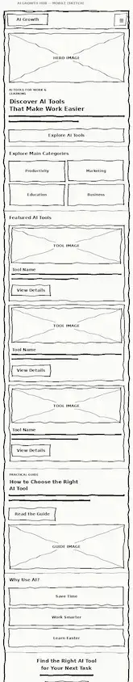
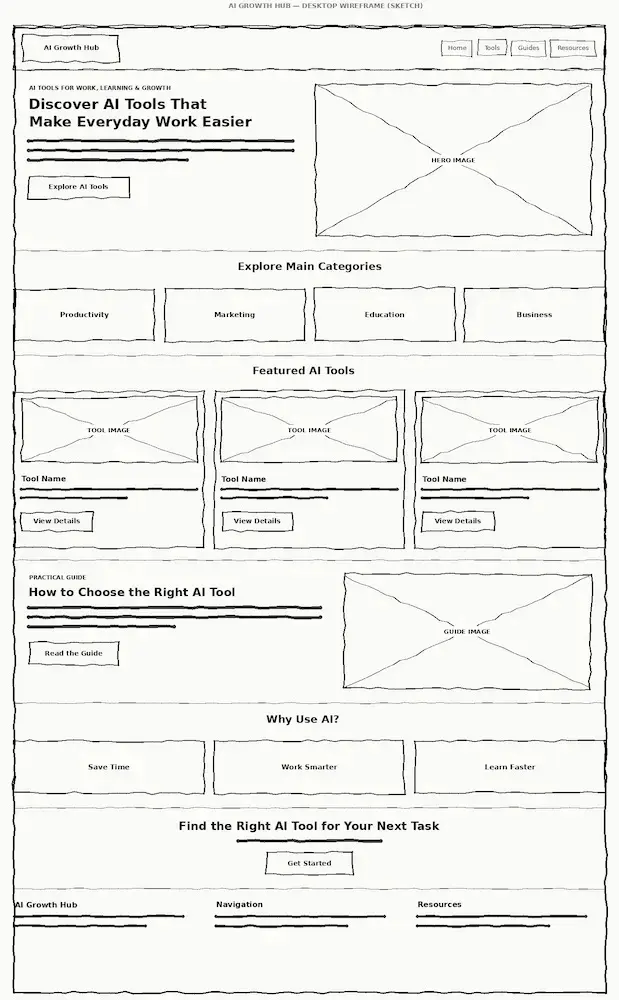

Page 1
Home
The home page will introduce AI Growth Hub, explain the value of AI for work and learning, show the main tool categories, highlight featured tools, and guide visitors toward the tools directory.
WDD 231 Individual Project
A planning document for a responsive website that helps professionals, entrepreneurs, and students discover and learn about useful artificial intelligence tools.
The name AI Growth Hub was selected because it represents a central place where people can discover artificial intelligence tools, practical resources, and recommendations that support productivity, professional development, learning, marketing, business, and everyday work.
The word Growth refers not only to business growth, but also to personal learning, better productivity, and professional development.
Optional representative domain: aigrowthhub.example
AI Growth Hub will help professionals, entrepreneurs, and students discover and understand artificial intelligence tools that can improve productivity, marketing, business activities, learning, creativity, and everyday work.
The website will provide:
This project will expand the AI Growth Hub website originally created in WDD 131 while applying responsive design, accessibility, usability, and web performance best practices.
Page 1
The home page will introduce AI Growth Hub, explain the value of AI for work and learning, show the main tool categories, highlight featured tools, and guide visitors toward the tools directory.
Page 2
The tools page will load at least fifteen tools from a JSON data source. Visitors will be able to search, filter, open tool details in a modal dialog, and save favorites with local storage.
Page 3
This page will provide practical guides, beginner resources, responsible-use recommendations, and examples of how AI can be applied to productivity, learning, marketing, and business.
#102A43
Used for the header, footer, main headings, primary buttons, and important navigation elements.
#2563EB
Used for links, active states, interactive controls, accents, and secondary buttons.
#EAF2FF
Used for highlighted sections, supporting content areas, card backgrounds, and tool category labels.
#F8FAFC
Used for the main page background and to create visual separation between sections.
#172033
Used for paragraphs, form labels, card descriptions, and general body content.
Inter will be the primary font family throughout the website. It will be used for headings, paragraphs, navigation, buttons, forms, tool cards, modal content, and other interface elements.
Inter 700 — Main headings and calls to action
Inter 600 — Navigation, labels, and subheadings
Inter 400 — Paragraphs and general body content
Fallback fonts:
Arial, sans-serif
The following black-and-white wireframes show the proposed structure of the AI Growth Hub home page for mobile and wider viewports.

